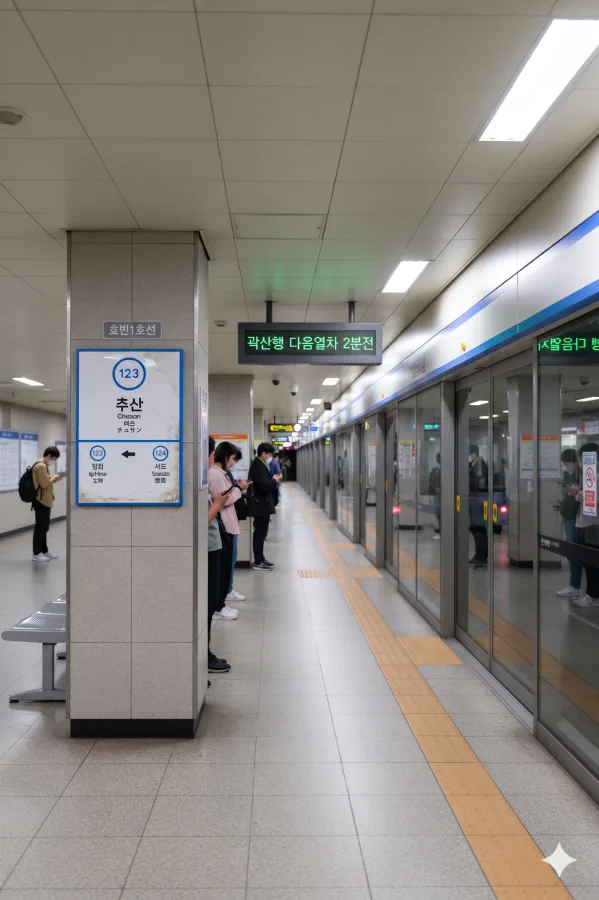

효빈 도시철도 1호선 123번. 효빈광역시 북구 추산동 1-15 소재이다.
효빈광역시 북구 추산동에 위치한 효빈 도시철도 1호선의 역이다. 지상 1층 역사를 사용하고 있으며, 입희역과 서도역 사이에 위치해 있다. 인근에는 주거단지와 추산동 행정복지센터 등이 자리 잡고 있어 지역 주민들의 이용이 많은 편이다.
|
1
추산역 출구 정보
|
||
|---|---|---|
| 번호 | 주요 시설 및 방향 | 비고 |
| 1 | 추산동경로당 | |
| 2 | 추산어린이집 | |
| 추산역 이용객 통계 | ||
|---|---|---|
| 연도 | 일평균 이용객 | 비고 |
| 2020년 | 4,516명 | |
| 2021년 | 4,626명 | |
| 2022년 | 5,678명 | |
| 2023년 | 5,720명 | |
| 2024년 | 5,433명 | |

| 입 희 ↑ | ||||
| 하 | ㅣ | ㅣ | ㅣ | 상 |
| ↓ 서 도 | ||||
| 상 | 1 효빈 도시철도 1호선 | 곽암해수욕장 · 창선 방면 |
| 하 | 1 효빈 도시철도 1호선 | 장선 · 승남해수욕장 방면 |
효빈광역시 시내버스 노선들이 주로 정차한다.
| 구분 | 정류소명 | 노선 번호 |
|---|---|---|
| 순방향 | 추산역 | 231 |
| 역방향 | 추산역(건너편) | 321 |